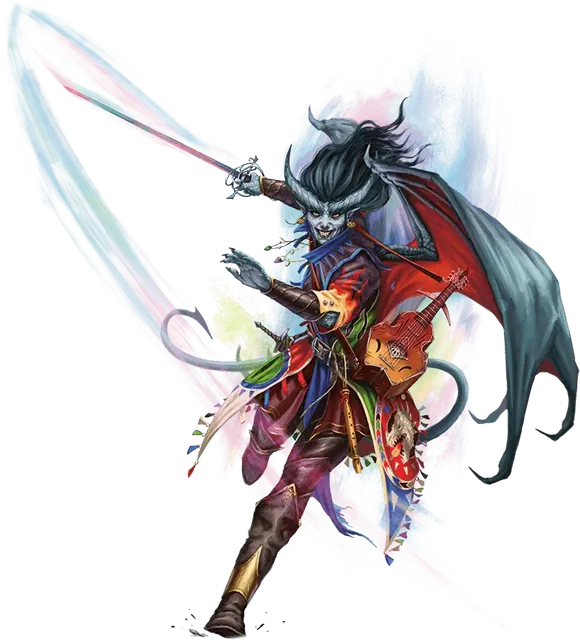

Неожиданность
Windfall
Средний Гуманоид (Тифлинг, Бард), хаотично-злой, именной НИП

Класс Доспеха 19 (проклёпанный кожаный доспех)
Хиты 323 (34к8 + 170)
Скорость 30 футов, летая 30 футов
| мод | спас | ||
|---|---|---|---|
| СИЛ | 14 | +2 | +9 |
| ЛОВ | 24 | +7 | +14 |
| ТЕЛ | 20 | +5 | +5 |
| мод | спас | ||
|---|---|---|---|
| ИНТ | 22 | +6 | +6 |
| МДР | 18 | +4 | +11 |
| ХАР | 26 | +8 | +15 |
Навыки Восприятие +11, Выступление +22, Ловкость рук +14, Магия +13, Обман +22, Проницательность +18, Убеждение +22
Сопротивление урону звук, кислота, огонь, холод, электричество
Иммунитет к состояниям испуг, очарование
Чувства тёмное зрение 60 футов, пассивное Восприятие 21
Языки Общий, Драконий, Инфернальный
Опасность 23 (50000 опыта)
Бонус мастерства +7
Особенности
Ослепительное зрелище. Неожиданность ярко сияет светом всех цветов спектра, в результате чего все броски атаки по ней совершаются с помехой. Эта особенность перестаёт действовать когда Неожиданность недееспособна или когда ее скорость равна 0.
Легендарное сопротивление (3/день). Если Неожиданность проваливает спасбросок, то она может вместо этого сделать спасбросок успешным.
Особое снаряжение. Неожиданность облачена в многоцветный волшебный плащ, специально сшитый по её фигуре и наполненный могуществом Тиамат. Когда она умирает, её плащ становится мантией сияющих цветов [robe of scintillating colors].
Действия
Мультиатака. Неожиданность совершает две атаки Многоцветной рапирой и один раз использует Драконью злобу.
Многоцветная рапира. Рукопашная атака оружием: +14 к попаданию, досягаемость 5 футов, одно существо. Попадание: 11 (1к8 + 7) колющего урона плюс 21 (6к6) урона одного из следующих видов (на выбор Неожиданности): кислота, холод, огонь, электричество или яд.
Драконья злоба. Неожиданность выбирает целью одно существо в пределах 60 футов от неё, которое она может видеть, и обрушивает на него взрыв магической ярости. Цель должна совершить спасбросок Мудрости Сл 23. При провале цель получает 36 (8к8) урона психической энергией и становится испуганной до начала следующего хода Неожиданности. При успехе цель получает только половину этого урона, не становясь испуганной.
Использование заклинаний. Неожиданность накладывает одно из следующих заклинаний, используя Харизму в качестве базовой характеристики и без использования материальных компонентов (Сл спасброска от заклинаний 23):
• Неограниченно: обнаружение магии [detect magic], свет [light], чудотворство [thaumaturgy]
• 3/день каждое: дребезги [shatter], невидимый слуга [unseen servant]
• 2/день каждое: гипнотический узор [hypnotic pattern], послание [sending]
• 1/день: удержание чудовища [hold monster]
Бонусные действия
Проворный танец. Неожиданность перемещается на расстояние, не превышающее её скорость, не провоцируя атаки.
Легендарные действия
Неожиданность может совершить 3 легендарных действия, выбирая из представленных ниже вариантов. За один раз можно использовать только одно легендарное действие, и только в конце хода другого существа. Неожиданность восстанавливает использованные легендарные действия в начале своего хода.
Драконий сполох. Неожиданность выбирает целью существо в пределах 30 футов от неё, которое она может видеть, и вспыхивает многоцветным пламенем. Цель должна совершить спасбросок Ловкости Сл 23. При провале цель получает 26 (4к12) урона того вида, который выбирает Неожиданность: кислотой, холодом, огнем, электричеством или ядом. При успехе существо получает только половину этого урона.
Накладывание заклинания (стоит 2 действия). Неожиданность использует особенность Использование заклинаний.
Ошеломительное сияние (перезарядка 5-6). Неожиданность испускает огромное количество многоцветного света из своего плаща. Все существа в пределах 30 футов от Неожиданности, которые могут её видеть, должны преуспеть в спасброске Телосложения Сл 23, иначе становясь ошеломлёнными до начала следующего хода Неожиданности.
Описание
Будучи преданной защитницей Тиамат, Неожиданность получила от своей госпожи невероятную силу: её кожа покрыта сверкающими разноцветными чешуйками, а в сражении её клинок поет всеми пятью стихиями цветных драконов. Зачарованный плащ девушки переливается цветами Королевы Драконов, и она использует его, чтобы ослеплять врагов и впечатлять союзников.
Неожиданность — харизматичная проказница с душой поэта и артиста. Она ведёт светские беседы с постоянными посетителями и радостно встречает новые лица в казино.